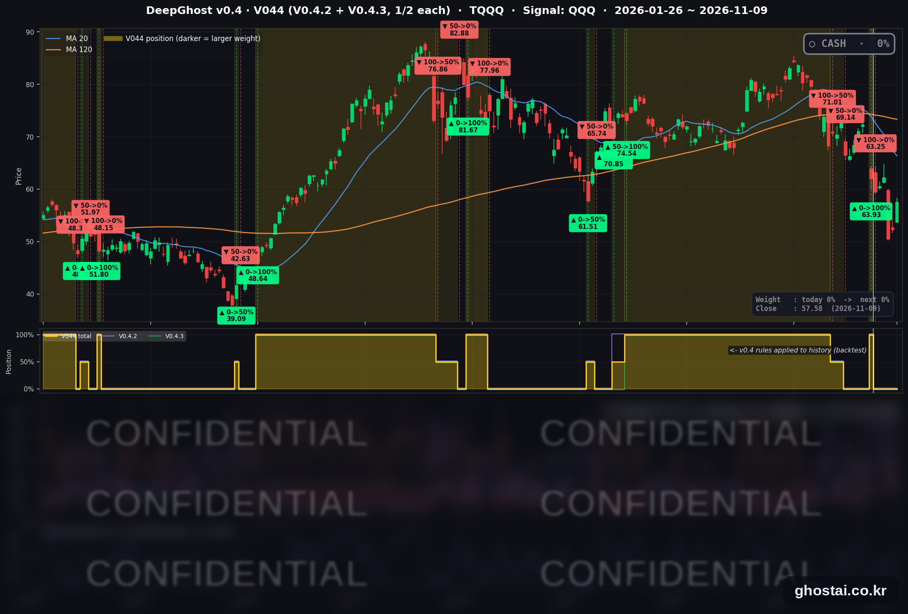

반도체 반등에 S&P500 4월 이후 최대 상승, 엔비디아만 하락
· Ghost.AI 데일리 리포트
👻 매일 시그널과 히스토리를 홈페이지에서 한눈에 → www.ghostai.co.kr
회원 페이지 안내 — 회원 가입하시면 공식 전략 v0.4의 TQQQ 비중과 판단 근거, 원본 차트, 분석 레포트를 매일 확인하실 수 있습니다. 회원 페이지는 블로그·유튜브보다 먼저 업데이트됩니다. 지금 베타 회원을 받고 있으며, 이메일과 필명만으로 가입하실 수 있고 서비스 사용료는 받지 않습니다. 이메일 확인 후 바로 이용하실 수 있습니다.
반도체주 반등과 유가 하락으로 나스닥이 2.74%, S&P 500 이 2.35% 올랐습니다. S&P 500 상승률은 4월 8일 이후 가장 크고, 구성종목 493개 중 411개가 올라 11개 업종이 모두 상승했습니다. 엔비디아는 이사회 조사 소식에 4.27% 내렸습니다. VIX 는 22.31% 내린 19.92 이고 10년물 금리는 거의 변하지 않았습니다. TQQQ 는 약 10.2% 올랐고, 전략은 11월 2일 매도 뒤 현금 보유 중입니다.
📊 오늘의 매매 신호
| 항목 | 내용 |
|---|---|
| 오늘의 신호 | 🟡 신규 신호 없음 — 전략은 현금 보유를 유지합니다 |
| 포지션 상태 | 💵 현금 보유 중 (OUT OF POSITION) |
| 현금 보유 기간 | 2026-11-02 ~ 2026-11-09 (6일, 11월 2일 시가 매도 후) |
| TQQQ 종가 | $57.58(약 +10.2%) |
TQQQ 시그널 — OUT OF POSITION
현재 상태: 현금 보유 중 | 11월 2일 시가 $63.25 매도

전략은 11월 2일(월) 시가 63.25달러에 TQQQ 를 매도한 뒤 현금 보유 중이고, 11월 9일에도 새 신호는 나오지 않았습니다. TQQQ 는 약 10.2% 오른 57.58달러로 마감했습니다. 하루 상승률은 2025년 5월 12일 이후 가장 큽니다.
오늘 미국 시장 — 시황 요약
지수 마감
| 지수 | 종가 | 등락률 |
|---|---|---|
| S&P 500 | 7,549.94 | +2.35% |
| 나스닥 종합 | 25,253.14 | +2.74% |
| 다우존스 | 52,389.75 | +2.15% |
| 러셀 2000 (IWM) | 282.51 | +3.23% |
| QQQ (나스닥100) | 679.35 | +3.54% |
| TQQQ | 57.58 | 약 +10.2% |
| 반도체 ETF (SOXX) | 146.76 | +7.49% |
S&P 500 상승률은 4월 8일 이후, 나스닥은 7월 30일 이후 가장 크고, QQQ 는 2025년 5월 12일 이후 가장 많이 올랐습니다. 시가 상승 폭은 크지 않았고 장중에 상승 폭이 커졌습니다. S&P 500 은 시가 +0.62% 에서 +2.35% 로, 나스닥은 +0.81% 에서 +2.74% 로 마감했습니다.
S&P 500 구성종목 493개 중 411개(83.4%)가 올라 상승 비율이 4월 8일 이후 가장 높았습니다. 나스닥은 200일선보다 0.58% 위로 올라왔지만, 10월 6일 최고 종가보다는 8.50% 낮고 11월 3일 종가에도 못 미칩니다. S&P 500 은 최고 종가보다 3.44% 낮습니다.
국채 금리 동향
| 만기 | 11/6 종가 | 11/9 종가 | 전일 대비 |
|---|---|---|---|
| 3개월 | 4.000% | 4.035% | +3.5bp |
| 5년 | 4.648% | 4.659% | +1.1bp |
| 10년 | 4.859% | 4.864% | +0.5bp |
| 30년 | 5.260% | 5.256% | -0.4bp |
만기가 짧을수록 많이 올랐고 30년물은 소폭 내렸습니다. 미 재무부 기준 2년물은 4.56% 로 5bp 올랐습니다. 10년물과 3개월물의 차이는 82.9bp 로 줄었고 역전은 없습니다.
10년물이 거의 변하지 않았으므로 이날 주가 상승은 금리로 설명되지 않습니다. 단기 금리 상승은 12월 금리 인상 전망을 반영합니다.
연준 발언 & 금리 패스
- 굴스비 시카고 연은 총재: AI 데이터센터 건설이 "전통적인 수요 과열"처럼 보인다며, 이런 과열은 처음부터 공격적으로 막아야 한다고 말했습니다(블룸버그·The Hill). 성장세는 "놀라울 정도로 강하다"고 평가했습니다. 매파적입니다.
- 보먼 감독 부의장: 이날 주제는 지역 은행이었고 통화정책 발언은 확인되지 않았습니다.
- 금리 경로: 연준 기준금리는 3.75~4.00% 이고 다음 회의는 12월 8~9일입니다. 고용보고서 뒤 강해진 12월 인상 전망이 이어졌습니다(11/6 로이터 기준 인상 확률 약 78%). 11월 10일 CPI 가 회의 전 마지막 CPI 입니다.
오늘의 핵심 이슈
- 반도체주가 반등을 이끌었습니다. SOXX 는 7.49% 올랐고 AMD 13.26%, 램리서치 10.41%, 브로드컴 8.78%, 마이크론 6.25% 상승했습니다. CNBC 와 로이터는 지난주 AI·반도체주 급락 뒤의 매수세와 유가 하락을 상승 이유로 들었습니다. 업종 중간값은 정보기술(+4.00%)이 가장 높고 유틸리티(+0.77%)가 가장 낮습니다.
- 엔비디아는 4.27% 내려 반도체주 가운데 혼자 하락했습니다. 엔비디아 이사회는 젠슨 황 CEO 가 외국 정보기관 활동의 표적이 됐다는 보도와 관련해 독립 조사를 시작한다고 밝혔습니다. 이사회는 국가 안보나 회사 기밀이 유출됐다고 볼 이유는 없다고 했습니다. 주가는 시가 -7.29% 에서 출발해 낙폭을 줄였고, 3분기 실적 발표는 11월 17일입니다.
- 유가가 크게 내렸습니다. WTI 는 4.90%, 브렌트는 6.26% 내렸습니다. 로이터는 트럼프 대통령이 이란 추가 공격 가능성을 낮게 언급한 것을 이유로 들었습니다. 호르무즈 해협 인근 선박 공격은 이어지고 있습니다.
변동성 & 투자심리
VIX 는 25.64 에서 19.92 로 22.31% 내렸습니다. 하루 하락률은 2025년 4월 9일 이후 가장 크고, 종가는 11월 4일(16.61) 이후 가장 낮습니다. 다만 지난주 11월 4일에도 VIX 가 크게 내린 다음 날 나스닥이 5.52% 내렸습니다. 공포탐욕 지수는 집계 사이트(feargreedmeter.com) 표시값이 32(공포)로 전일 22(극단적 공포), 1주 전 19 입니다.
매크로 & 원자재
| 품목 | 종가 | 등락률 | 11/3 대비 |
|---|---|---|---|
| WTI 선물 | $86.38 | -4.90% | -10.11% |
| 브렌트 선물 | $92.17 | -6.26% | -11.03% |
| 원유 ETF (USO) | $142.66 | -3.87% | -9.81% |
| 금 선물 | $4,149.50 | +1.83% | +5.31% |
| 금 ETF (GLD) | $379.53 | +1.88% | +5.64% |
WTI·브렌트 하락률은 11월 4일 이후 가장 큽니다. 원유는 중간선거일(11월 3일) 이후 약 10% 내렸고 금은 약 5% 올랐습니다. 이날 미국 주요 경제지표 발표는 없었습니다.
주요 종목 동향
| 종목 | 종가 | 등락률 | 비고 |
|---|---|---|---|
| AVGO | 319.48 | +8.78% | 2025년 11월 24일 이후 최대 상승률 |
| MU | 733.15 | +6.25% | |
| TSLA | 378.05 | +5.54% | |
| INTC | 59.37 | +5.49% | |
| META | 641.37 | +5.12% | |
| QCOM | 171.47 | +3.66% | |
| AMZN | 266.93 | +2.94% | 장중 +6.17% 에서 상승 폭 축소 |
| MSFT | 545.18 | +2.75% | |
| AAPL | 350.69 | +2.43% | |
| GOOGL | 288.15 | +1.18% | 장중 +4.06% 에서 상승 폭 축소 |
| NFLX | 63.95 | +0.85% | |
| NVDA | 178.67 | -4.27% | 이사회 조사, 시가 -7.29% 에서 낙폭 축소 |
커버리지 12종목 중 11종목이 올랐고 엔비디아만 내렸습니다.
다음 일정 (미 동부시간)
- 11/10(화) 04:00 월러 이사 연설 / 08:30 10월 CPI (예상 전월 대비 +0.3%, 근원 +0.2%) / 13:00 10년물 입찰 / 15:30·18:30 보먼 부의장 연설 / 장 후 CoreWeave 실적
- 11/11(수) 재향군인의 날. 주식시장은 개장하고, SIFMA 는 채권시장 휴장을 권고합니다
- 11/12(목) 08:30 주간 신규 실업수당 청구 / 13:00 30년물 입찰 / 장 후 Cisco·Applied Materials 실적
- 11/13(금) 08:30 10월 PPI
- 11/17(화) 엔비디아 3분기 실적
- 11/18(수) 14:00 10월 FOMC 의사록
- 12/4(금) 08:30 11월 고용보고서
- 12/8~12/9 FOMC
Ghost.AI — Quantitative AI Investment
Model: DeepGhost v0.4 | Transformer-Based Deep Learning
Coverage: 14 tickers | Updated every trading day after US market close
⚠️ 본 자료는 정보 제공 목적으로만 작성되었으며 투자 권유가 아닙니다. 모든 투자의 책임은 투자자 본인에게 있습니다. 과거 성과가 미래 수익을 보장하지 않습니다.
[유의사항]
- 본 서비스는 불특정 다수를 대상으로 발행되는 단방향 정보 제공 서비스이며, 투자자 개인의 재산 상황·투자 목적·위험 선호도를 반영한 개별 투자 조언이 아닙니다.
- 고스트에이아이 주식회사는 고객과 쌍방향 의사소통(개별 상담, 맞춤형 자문 등)을 제공하지 않습니다.
- 본 콘텐츠는 투자 권유 또는 매매 주문의 청약·청약의 권유에 해당하지 않으며, 최종 투자 판단 및 그에 따른 손익의 책임은 전적으로 투자자 본인에게 있습니다.
고스트에이아이 주식회사